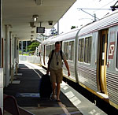
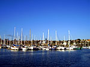
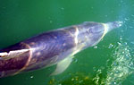
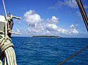
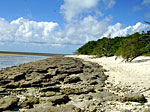
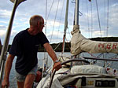
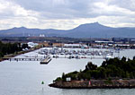

Turen nedover
Selve turen nedhit ble ikke så komfortabel som jeg hadde håpet på – bortsett fra Oslo- London, hvor jeg smisket meg til å få sitte på Business-Class. Fra London var Hong Kong flyet over 2 timer forsinket, og når jeg endelig kom om bord, var det 12 trange timer i luften.
Det ble også 6 timers venting i Hong Kong, noe jeg hadde håpet på å slå ihjel med mender av billig elektronikk. Det ble et skuffende møte. Elektronikken var dyr, og butikkene få. Heldigvis fant jeg en lounge, hvor jeg som Diners Club-innehaver kom gratis inn. Det gjorde godt med en dusj etter et døgn på reise!
Stoppet i tollen
Det ble 8 enda trangere timer til Brisbane – så trangt at det var umulig å få sove. Sliten og utmattet ankom jeg Australia lørdag formiddag, dog med fornyet energi etter å ha hentet bagasjen og hastet av gårde for å rekke toget. Kanskje det var denne skumle blandingen av et trøtt tryne på en smule forvirret bleiking som gjorde at jeg vant en hel times grundig endevending av baggasjen, med tilhørende ”avhør” for å avdekke mine uærlige hensikter.
Nervøs som jeg blir av uniformerte personer, med rett til å bøtelegge, la jeg ut om hvem jeg er, og hva jeg skulle. Tror jeg lirte av meg ganske stor del av livshistorien min på den tiden jeg ble oppholdt, i tillegg til å legge ut om Frode og Marits jordomseiling. De stillte spørsmålene om og om igjen, for å forsøke å ta meg i løgn, men jeg lot meg ikke knekke…….

Det eneste de klarte å sette fingen på, var at jeg ikke hadde deklarert de medbrakte våpnene. Jeg hadde tatt med 4 stk Morakniver til Frode – og dette er jo farlige våpen må forståes…De ville først gi meg en klekkelig bot, men jeg slapp unna med en advarsel, og måte ove på tro og ære at jeg neste gang skulle gi beskjed om at jeg hadde med farlige våpen.
East Coast Marina, Manly

Et par togturer fra flyplassen, og jeg var fremme i marinaen, der Petrell har vært på land denne vinteren. Der ble jeg mottatt av Frode og Asbjørn, Frodes far, og innlosjert om bord.Søndagen gikk med til proviantering, og vi rakk også en øl på den lokale pub’en sammen med Yngve, Therese og Ronny fra den norske båten S/Y La Familia.
En tøff begynnelse

Mandag morgen dro vi av gårde fra Brisbane sammen med La Familia, eksortert ut i åpen sjø av en flokk delfiner. Planen var å gå nordover til Fraser Island, en god døgnseilas vekke. Bølgene var store, og kombinasjonen av været og tidevannet, gjorde at vi ikke kunne seile den planlagte ruten. Vi forsøkte også en alternativ rute, men denne ble også oppgitt etter en stund. La Familia la om kursen mot Bundaberg, da de skulle få flere personer om bord der, mens vi tok til slutt sikte på Lady Musgrave Island.En 24 timers seilas ble til 49 timer – en stor belastning for en som er mest vant til trange vestlandsfjorder…Og – ja – det ble krabbemating!
Nærkontakt med hai

Onsdag morgen ankommer vi Lady Musgrave Island, en nydelig stillehavsøy og en av de første i Great Barrier Reef. Denne lille øyen har en lagune på ca 2 km i diameter, og når man har snirklet seg inn en trang og strømfull passasje, har man god beskyttelse for havdønningene. Langs kanten av revet ser vi havet bryter og det er et kontinuerlig drønn.Etter en kraftig frokost, som for å ta igjen alle de tapte måltidene under overfarten, drar vi ut med dingen (fornorsket utgave av ”dingy” som er jolle på engelsk). Vi har flaks på vår første snorkletur, og får oppleve stingray, haier, skilpadder og stor snapper, i tillegg til ”alle de vanlige akvariefiskene”.

Vi snorkler også torsdagen, og får enda nærmere kontakt med hai. Den er overalt, og fryktelig nysgjerrig. Dette fører til at vi ikke tar sjansen på å spidde fiskemiddagen, av frykt for å ende opp som middag selv. Vi instiller oss på annen kost, og får oppleve flere skilpadder, samt en svær murene som lå voktende i hulen sin.
Petrell på grunn
Fredagen starter med regn og vindstille – den verst tenkelige kombinasjonen. Det er en noe nedtrykt steming i båten, og det blir ikke noe bedre av at jeg har glemt toalette i feil posisjon, noe som resulterer i at havet siger sakte inn og utover dørken…Ikke akkurat en killer-start på dagen.

Vi drar for motor videre til Pancake Creek, en avmerket ankring en liten mil oppi en elv. Vi kommer dit en liten stund før skumring. Innseilingen er smal og grunn, og vi har flere knops medstrøm. Disse vanselige forholdene gjør at vi ender opp med kjølen godt plantet i en sandbanke. Etter mye stressing, kjefting og smelling, men etter et par timers arbeid er båten trukket ut på dypere vann ved hjelp av et ekstra anker. Vi legger oss på svai blant noen andre båter litt lenger inni elven. Det blir lite søvn den natten – ingen av oss er sikker på at ankeret sitter godt nok i den lumske elvesanden.Gladstone

Det er meldt lite eller ingen vind lørdagen, så vi drar for motor mot Gladstone, en søvnig industriby en dagstur lenger nord. Et stykke utpå treffer vi på en enorm Manta Ray, som vinker til oss med vingespissene sine. Vi sirkler rundt den noen ganger for å ta denne utrolige skapningen i bedre øyesyn..Vi kommer til Gladstone 15 minutter etter at marinakontoret er stengt. Da blir det våtserviett-rengjøring før vi rusler bort til yacht-clubben for å spise middag.
Søndagen får vi tilgang til marinaens fasiliteter. Det er sjelden at det er så godt med en dusj som når du har en ukes svette, solkrem og myggolje å vaske av.
Timingen for vårt besøk i Gladstone er strålende. Bortimot alt er stengt om søndagen – og mandag er det offentlig fridag pga 1. mai. Vi klarer likevel å få handlet inn grillmat. Parken ved mariaen har mange elektriske griller, og vi planlegger å benytte oss av tilbudet. Det blir regn og alvorlige moskitosangrep på ettermiddagen, slik at vi inntar maten om bord i båten, omgitt av mygglys.
Mandag 1. mai vekkes vi av en diger flokk med fargerike dvergpapegøyer som synger solen opp av havet. Værmeldingen sier at det blir gunstigere vind i morgen, og vi satser da på å komme oss til Keppler Island.